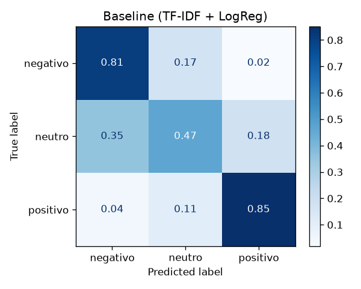
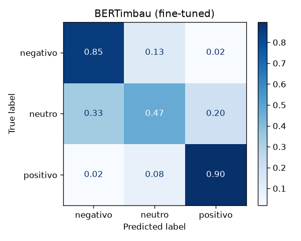
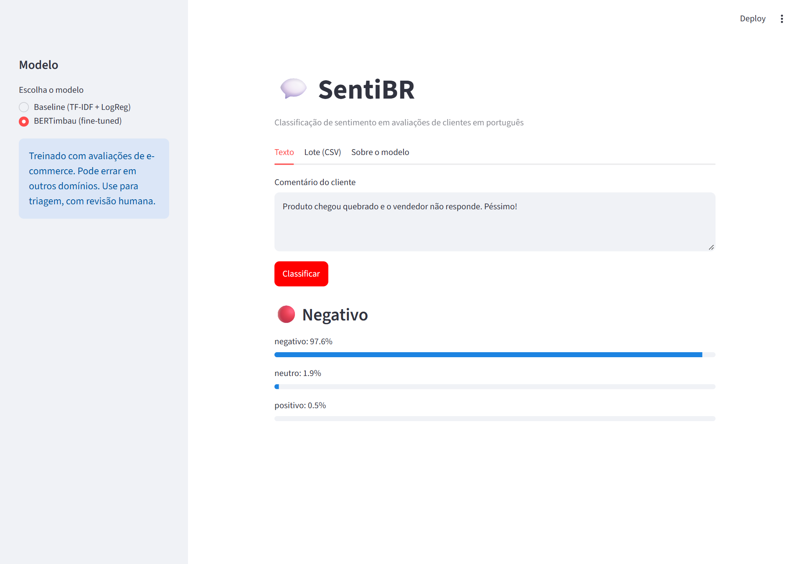

Empresas de varejo recebem milhares de avaliações em texto livre, e ler todas à mão é inviável. Reclamações urgentes se perdem no meio de elogios, e a nota de 1 a 5 nem sempre reflete o que o texto diz. O SentiBR classifica cada comentário como negativo, neutro ou positivo, com a probabilidade de cada classe, para priorizar o atendimento e medir a satisfação. O projeto também compara uma abordagem clássica com um transformer, para quantificar o ganho real do deep learning e o custo dele.
Fonte: Brazilian E-Commerce Public Dataset by Olist (Kaggle, licença CC BY-NC-SA 4.0), com 99.224 avaliações reais e anonimizadas de 2016 a 2018. Alvo: derivado da nota do cliente (1–2 = negativo, 3 = neutro, 4–5 = positivo), ou seja, supervisão fraca.
assert e um teste
automatizado garantem que treino e teste não compartilham textos.Olist → dados.py (limpar, rotular, deduplicar, dividir) → treino | validação | teste
├─ baseline.py TF-IDF (1–2 gramas) + Regressão Logística balanceada, GridSearchCV no treino
└─ treinar_bert.py BERTimbau, 2 épocas, cross-entropy ponderada
→ avaliar.py (mesmo teste para todos: métricas, matriz de confusão, latência) → app Streamlit
class_weight="balanced".
Busca em grade (validação cruzada de 3 partes, só no treino) sobre a regularização C, a remoção de stopwords e a remoção
de acentos. As negações ("não", "nunca", "nem"…) nunca são removidas. Melhor configuração: C = 0,5, sem
stopwords, sem acentos.neuralmind/bert-base-portuguese-cased), com até
128 tokens, taxa de aprendizado 2e-5, warmup de 10%, fp16, em uma GPU RTX 3050 de 6 GB (~10 min). A perda é uma
cross-entropy ponderada pelo inverso da frequência das classes (pesos 1,16 / 3,72 / 0,53), implementada em
uma subclasse do Trainer. Uma versão sem pesos foi mantida como ablação.| Modelo | F1-macro | Acurácia | F1 neg. | F1 neutro | Recall neutro | F1 pos. | Latência CPU |
|---|---|---|---|---|---|---|---|
| Classe majoritária (piso) | 0,256 | 0,624 | 0,00 | 0,00 | 0,00 | 0,77 | — |
| TF-IDF + LogReg (baseline) | 0,682 | 0,806 | 0,81 | 0,34 | 0,47 | 0,90 | 1,6 ms |
| BERTimbau sem pesos (ablação) | 0,674 | 0,866 | 0,86 | 0,23 | 0,17 | 0,94 | — |
| BERTimbau com pesos | 0,721 | 0,847 | 0,85 | 0,38 | 0,47 | 0,93 | 73 ms |


Matrizes de confusão normalizadas por linha (recall) no conjunto de teste: baseline (esq.) e BERTimbau com pesos (dir.).
Foram lidos e categorizados 40 erros sorteados do BERTimbau (detalhes em reports/erros.md):
| Categoria | Erros | Exemplo |
|---|---|---|
| Sentimento misto | 12 | "Controle bom. Mas demora muito a entrega." (positivo → neutro) |
| Ruído de rótulo | 10 | "Cartuchos falsos. Não recomendo…" com nota 4–5 (o modelo está certo) |
| Reclamação implícita | 6 | "Bem diferente da foto" (negativo → neutro) |
| Fronteira entre classes vizinhas | 4 | "Não chegou até minha casa. Tive que ir buscar" (neutro → negativo) |
| Texto curto/ambíguo | 4 | "kkkkkkkkkkkkkk" (neutro → positivo) |
| Negação/contrafactual | 2 | "o produto não foi recebido ainda por falta minha" (positivo → negativo) |
| Erro claro do modelo | 2 | "Bom. Gostei do produto comprei de presente" (positivo → neutro) |
35 dos 40 erros envolvem a classe neutra, e só 5 são confusões diretas entre negativo e positivo, 4 delas por ruído de rótulo. Isso indica que a métrica tem um teto imposto pelo próprio rótulo, e que boa parte do "neutro" é, na verdade, sentimento misto, que uma única etiqueta não descreve.

Interface Streamlit: classificação de um comentário com o BERTimbau. O app também processa CSVs em lote e mostra as métricas dos modelos.
O projeto entregou um classificador de sentimento reprodutível, com especificação, testes, avaliação justa e interface. O transformer superou o baseline, mas a principal lição foi metodológica: com classes desbalanceadas, a escolha da métrica e da função de perda importa tanto quanto a arquitetura. A ablação mostrou isso de forma direta. Em um contexto de PD&I, as evoluções naturais são: (1) análise de sentimento por aspecto (entrega, produto, atendimento), que trata os comentários mistos; (2) um conjunto de teste revisado por humanos; (3) calibração das probabilidades e um limiar de confiança para encaminhar casos duvidosos à revisão; (4) destilação do modelo para reduzir a latência em CPU.